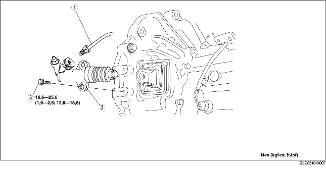

1. Quitar la tapa inferior.
2. Quitar según el orden indicado en la tabla.
3. Instalar en el orden contrario al de la remoción.

.
1. Tirar de la grapa en la posición indicada en la figura y extraer el conector del tubo del embrague en posición recta para desprenderlo.
F35M-R
G35M-R
1. Instalar la grapa en la posición que se muestra en la figura.
F35M-R
G35M-R
2. Instalar el tubo del embrague en posición recta.
3. Tirar del tubo del embrague para comprobar que no salga y colocarlo de nuevo completamente.